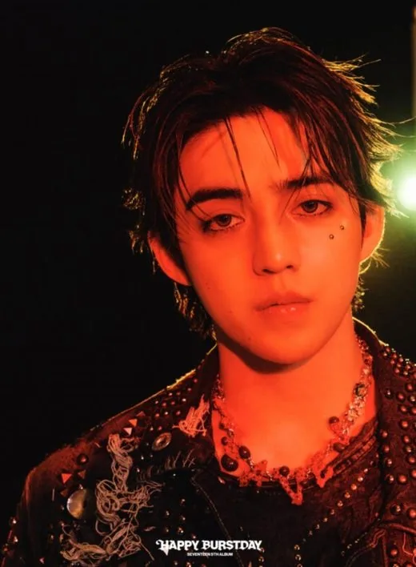
S.Coups
S.Coups (에스쿱스) · Leader, Leader Hip-Hop Team, Rappeur, Sous-vocaliste · Coréen
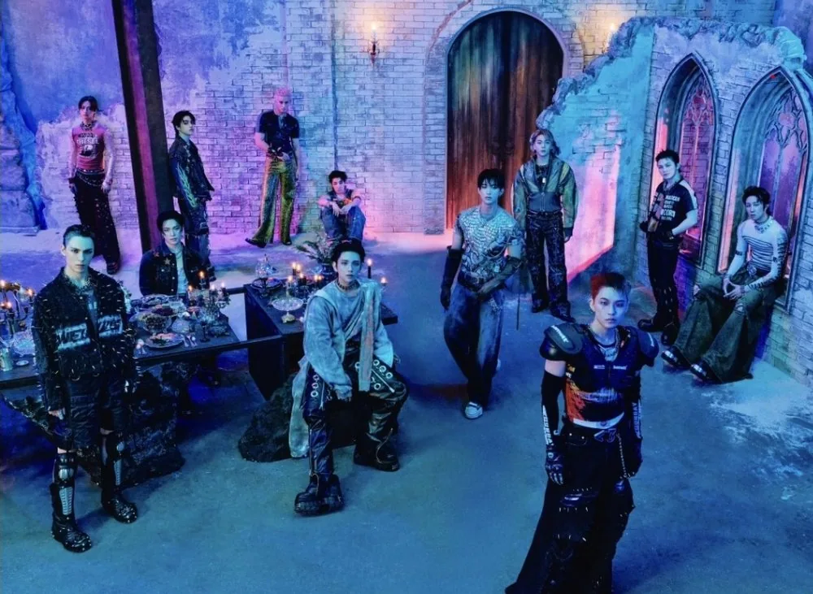
K-POP
Découvre SEVENTEEN et les profils de ses membres sur IBASE Asian Pop.
Ouvrir la fiche interactiveHistoire : SEVENTEEN (세븐틴) est un groupe auto-produit de 13 membres de Pledis Entertainment. Il devait compter 17 membres à l'origine, mais 4 sont partis avant les débuts : le nom évoque aujourd'hui 13 membres, 3 sous-unités (Hip-Hop, Vocal et Performance) et 1 équipe. Wonwoo, Hoshi, Woozi, Mingyu, DK et Vernon font leur service militaire et ont donc le badge hiatus. Jeonghan est revenu le 25 juin 2026. Source : KProfiles.
Débuts : 26 mai 2015 avec le mini-album « 17 CARAT »
Agence : Pledis Entertainment (HYBE Labels)

S.Coups (에스쿱스) · Leader, Leader Hip-Hop Team, Rappeur, Sous-vocaliste · Coréen
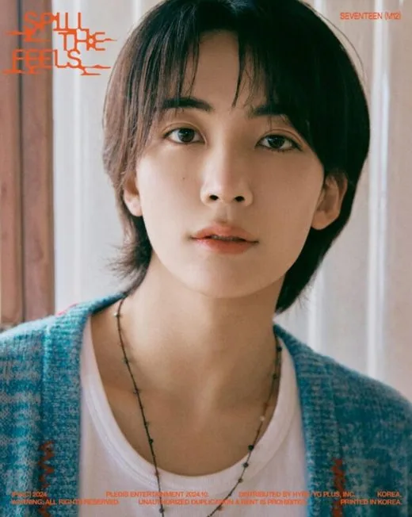
Jeonghan (정한) · Vocaliste lead, Visual · Coréen
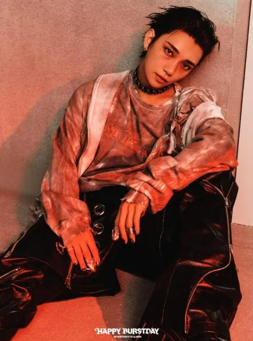
Joshua (조슈아) · Vocaliste lead, Visual · Coréen-Américain
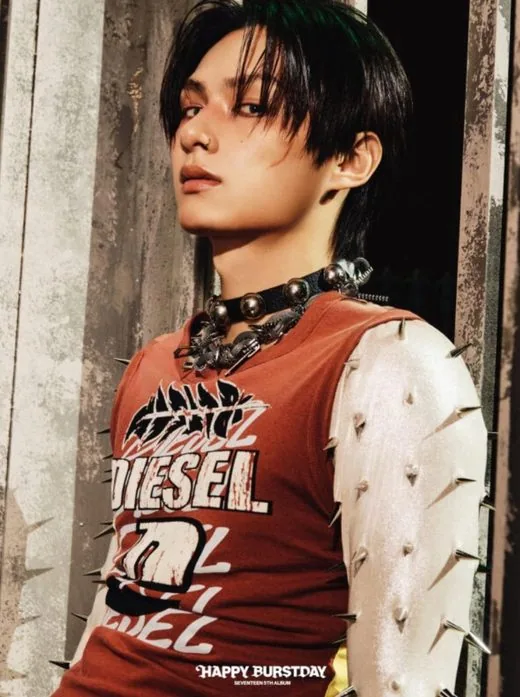
Jun (준) · Danseur lead, Sous-vocaliste · Chinois
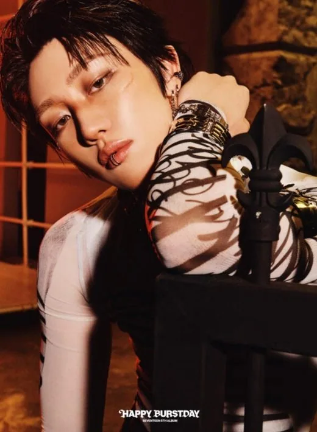
The8 (디에잇) · Danseur lead, Sous-vocaliste, Sous-rappeur · Chinois
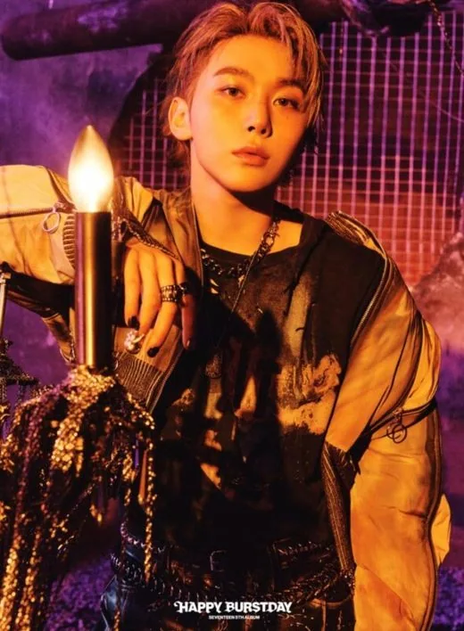
Seungkwan (승관) · Vocaliste principal, Face of the Group · Coréen
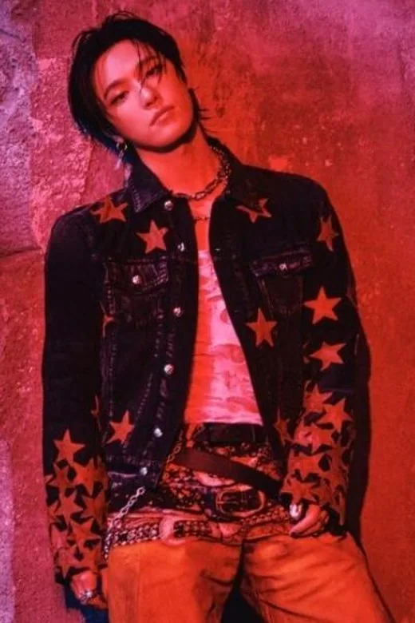
Dino (디노) · Danseur principal, Sous-vocaliste, Sous-rappeur, Maknae · Coréen
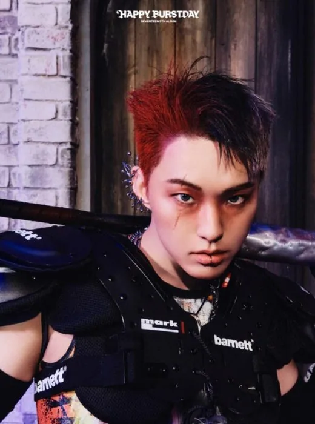
Hoshi (호시) · Leader Performance Team, Danseur principal, Vocaliste lead, Sous-rappeur · Coréen
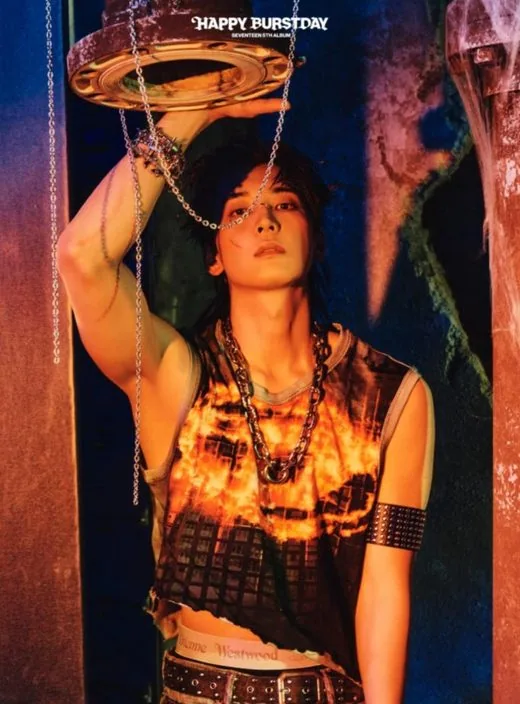
Wonwoo (원우) · Rappeur, Sous-vocaliste · Coréen
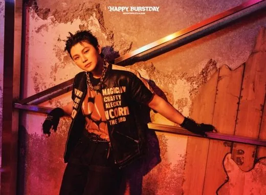
Woozi (우지) · Leader Vocal Team, Vocaliste lead, Producteur · Coréen
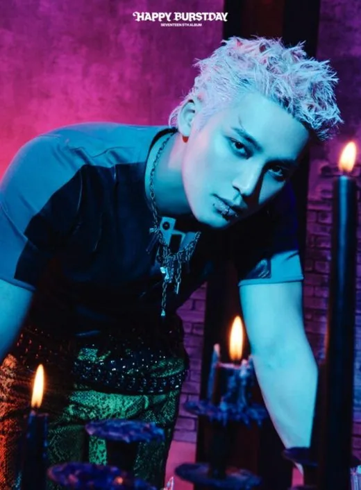
Mingyu (민규) · Rappeur, Sous-vocaliste, Visual, Face of the Group · Coréen
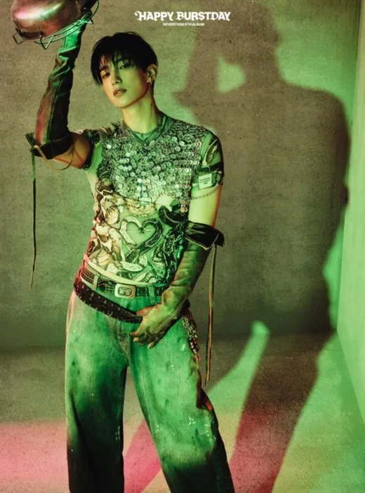
DK / Dokyeom (도겸) · Vocaliste principal · Coréen
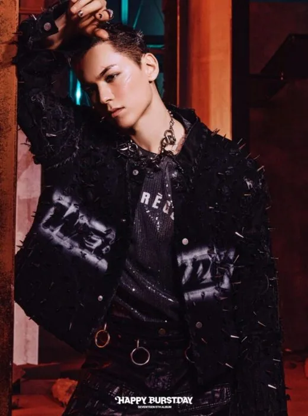
Vernon (버논) · Rappeur, Sous-vocaliste, Visual, Face of the Group · Coréen-Américain